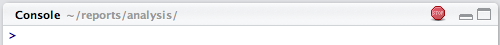

Chapter 3 What’s R?
R is a versatile, open source programming/scripting language that’s useful both for statistics but also data science. It’s inspired by the programming language S. Some of it’s best features are:
It’s free, open source, and available on every major platform. As a result, if you do your analysis in R, anyone can easily replicate it.
A massive set of packages for statistical modelling, machine learning, visualisation, and importing and manipulating data. Over 14,000 packages are available as of August 2019. Whatever model or graphic you’re trying to do, chances are that someone has already tried to do it.
Designed for statistics and data analysis, but also general-purpose programming.
An IDE tailored to the needs of interactive data analysis and statistical programming.
Powerful tools for communicating your results. R packages make it easy to produce html or pdf reports, or create interactive websites.
Large and growing community of peers.
R also has a number of shortcomings:
Steeper learning curve than SPSS or Stata.
R is not a particularly fast programming language, and poorly written R code can be terribly slow. R is also a profligate user of memory.
Much of the R code you’ll see in the wild is written in haste to solve a pressing problem. As a result, code is not very elegant, fast, or easy to understand. Most users do not revise their code to address these shortcomings.
Inconsistency is rife across contributed packages, even within base R. You are confronted with over 20 years of evolution every time you use R. Learning R can be tough because there are many special cases to remember.
3.1 R Studio
There are two main ways of interacting with R: using the console or by using script files (plain text files that contain your code).
3.1.1 Console
The console window (in RStudio, the bottom left panel) is the place where R is waiting for you to tell it what to do, and where it will show the results of a command. You can type commands directly into the console, but they will be forgotten when you close the session. Try it out now.
> 2 + 2
# [1] 4If R is ready to accept commands, the R console shows a > prompt. If it receives a command (by typing, copy-pasting or sent from the script editor using Ctrl-Enter), R will try to execute it, and when ready, show the results and come back with a new >-prompt to wait for new commands.
If R is still waiting for you to enter more data because it isn’t complete yet, the console will show a + prompt. It means that you haven’t finished entering a complete command. This is because you have not ‘closed’ a parenthesis or quotation. If you’re in RStudio and this happens, click inside the console window and press Esc; this should help you out of trouble.
> "This is an incomplete quote
+3.1.1.1 More console features
Retreiving previous commands: As you work with R you’ll often want to re-execute a command which you previously entered. Recall previous commands using the up and down arrow keys.
Console title bar: This screenshot illustrates a few additional capabilities provided by the Console title bar:
- Display of the current working directory.
- The ability to interrupt R during a long computation.
- Minimizing and maximizing the Console in relation to the Source pane (using the buttons at the top-right or by double-clicking the title bar).
knitr::include_graphics(path = "img/using_console_title_bar.png")
3.1.2 Scripts
It is better to enter the commands in the script editor, and save the script. This way, you have a complete record of what you did, you can easily show others how you did it and you can do it again later on if needed. Open it up either by clicking the File menu, and selecting New File, then R script, or using the keyboard shortcut Cmd/Ctrl + Shift + N. Now you’ll see four panes.
knitr::include_graphics(path = "./img/4-panes.png")
The script editor is a great place to put code you care about. Keep experimenting in the console, but once you have written code that works and does what you want, put it in the script editor. RStudio will automatically save the contents of the editor when you quit RStudio, and will automatically load it when you re-open. Nevertheless, it’s a good idea to save your scripts regularly and to back them up.
3.1.3 Execute lines of code with Cmd/Ctrl + Enter.
You can copy-paste into the R console, but there is a better way. The key to using the script editor effectively is to memorise one of the most important keyboard shortcuts: Cmd/Ctrl + Enter. This executes the current R expression in the console.
For example, take the code below. If your cursor is at *, pressing Cmd/Ctrl + Enter will run the complete command that generates dems. It will also move the cursor to the next statement (beginning with reps). That makes it easy to run your complete script by repeatedly pressing Cmd/Ctrl + Enter.
dems <- (55 + 70) * 1.3
reps <- (20 - 1) / 2Instead of running expression-by-expression, you can also execute the complete script in one step: Cmd/Ctrl + Shift + S. Doing this regularly is a great way to check that you’ve captured all the important parts of your code in the script.
3.1.4 Diagnostics and errors
The script editor will also highlight syntax errors with a red squiggly line and a cross in the sidebar:

Hover over the cross to see what the problem is:
knitr::include_graphics(path = "img/rstudio-diagnostic-tip.png")
If you try to execute the code, you’ll see an error in the console.
knitr::include_graphics(path = "img/error.png")
3.1.5 R Environment
Turn your attention to the upper right pane. This pane displays your “global environment”, and it contains the data objects you have saved in your current session. Notice that we have the two objects created earlier, dems, and reps, along with their values.
We can list all objects in your current environment by running:
ls()Sometimes we want to remove objects that we no longer need.
x <- 5
rm(x)If we want to remove all objects from your current environment, we can run:
rm(list = ls())3.1.6 Acknowledgments
This page is in part derived from the following sources:
3.2 R Syntax
Frustration is natural when you start programming in R, because it is such a stickler for punctuation, and even one character out of place will cause it to complain. But while you should expect to be a little frustrated, take comfort in that it’s both typical and temporary: it happens to everyone, and the only way to get over it is to keep trying.
3.2.2 Variables
We can use R like a calculator:
1 / 200 * 30## [1] 0.15#> [1] 0.15
(59 + 73 + 2) / 3## [1] 44.66667#> [1] 44.7
sin(pi / 2)## [1] 1#> [1] 1But when we do this, none of our results are saved for later use. An essential part of programming is creating objects (or variables)1 Variables are names for values.
3.2.2.1 Create variables with <-.
The variable is created when a value is assigned to it. We do that with <-.
x <- 3<- is the called the assignment operator. It assigns values on the right to objects on the left, like this:
object_name <- valueSo, after executing x <- 3, the value of x is 3. The arrow can be read as 3 goes into x.
In RStudio, typing Alt + - (push Alt, the key next to your space bar at the same time as the - key) will write <- in a single keystroke.
Note: Don’t use = for assignments. It will work in some contexts, but will cause confusion later.
3.2.2.2 Whitespace makes code easier to read.
Notice that RStudio automagically surrounds <- with spaces. In R, white space is ignored (unlike Python). But it is practice to use spaces, because it makes code easier to read.
experiment<-"current vs. voltage" # this is bad
experiment <- "current vs. voltage" # this is better3.2.2.3 Use meaningful variable names.
Object names can only contain letters, numbers, _ and ..
You want your object names to be descriptive. x is not a good variable name (sorry!). You’ll also need a convention for multiple words. I recommend snake_case where you separate lowercase words with _.
i_use_snake_case
otherPeopleUseCamelCase
some.people.use.periods
And_aFew.People_RENOUNCEconvention3.2.2.4 Inspect objects to display values.
In R, the contents of an object can be printed by either simply executing the the object name.
x## [1] 33.2.2.5 R is case sensitive.
Let’s make an assignment using snake_case:
r_rocks <- 2 ^ 3And let’s try to inspect is:
r_rock
#> Error: object 'r_rock' not found
R_rocks
#> Error: object 'R_rocks' not foundWhy did this happen?
3.2.2.6 Use the TAB key to autocomplete.
Because typos are the devil, we can use R Studio to help us type. Let’s inspect r_rocks using RStudio’s tab completion facility. Type “r_”, press TAB, add characters until you have a unique prefix, then press return.
r_rocks## [1] 83.2.2.7 Variables can be used in calculations.
We can use variables in calculations just as if they were values.
r_rocks## [1] 8r_rocks <- r_rocks + 3
r_rocks## [1] 113.2.2.8 Variables only change value when something is assigned to them.
If we make one cell in a spreadsheet depend on another, and update the latter, the former updates automatically. This does not happen in programming languages!
first = 1
second = 5 * first
first = 2
second## [1] 53.2.3 Challenges
3.2.3.1 Challenge 1: Making and Printing Variables.
Make 3 variables: name (with your full name), city (where you were born) and year (when you were born.)
3.2.3.2 Challenge 2: Swapping Values
Draw a table showing the values of the variables in this program after each statement is executed.
In simple terms, what do the last three lines of this program do?
lowest = 1.0
highest = 3.0
temp = lowest
lowest = highest
highest = temp3.2.3.3 Challenge 3: Predicting Values
What is the final value of position in the program below?
initial = "left"
position = initial
initial = "right"(Try to predict the value without running the program, then check your prediction.)
3.2.3.4 Challenge 4: Syntax
Why does the following code fail?
age == 31and the following?
31 <- age3.2.4 Functions and help
3.2.4.1 Use a function by calling it.
R has a large collection of built-in functions that helps us do things. When we use a function, we say we’re “calling” a function.
function_name(arg1 = val1, arg2 = val2, ...)Here are some helpful built-in functions:
my_var <- c(1, 5, 2, 4, 5)
sum(my_var)## [1] 17length(my_var)## [1] 5min(my_var)## [1] 1max(my_var)## [1] 5unique(my_var)## [1] 1 5 2 43.2.4.2 A function may take zero or more arguments.
An argument is a value passed into a function. Every function returns a result.
Let’s try using seq() which makes regular sequences of numbers and, while we’re at it, learn more helpful features of RStudio.
Type se and hit TAB. A popup shows you possible completions. Specify seq() by typing more (a “q) to disambiguate, or by using ↑/↓ arrows to select. Notice the floating tooltip that pops up, reminding you of the function’s arguments and purpose.
Press TAB once more when you’ve selected the function you want. RStudio will add matching opening (() and closing ()) parentheses for you. Type the arguments 1, 10 and hit return.
seq(1, 10)## [1] 1 2 3 4 5 6 7 8 9 10How many arguments did we pass into the seq function?
3.2.4.3 Functions may only work for certain (combinations of) arguments.
Let’s use another function, called round:
round(60.123)## [1] 60round must be given at least one argument. And it must be given things that can be meaningful rounded.
round()
round('a')3.2.4.4 Functions may have default values for some arguments.¶
By default, round will round off any number to zero decimal places. But we can specify the number of decimal places we want.
round(60.123)## [1] 60round(60.123, digits = 2)## [1] 60.12round(60.123, 2)## [1] 60.123.2.4.5 Store function output in variables.
Notice, when we called the seq function, that nothing changed in our environment. That’s because we didn’t save our results to an object. Let’s try it again by assigning a variable.
y <- seq(1, 10)3.2.4.6 Use ( ) around assignments to print values.
Notice that nothing was printed this time. When we make assignments, we don’t get to see the value unless we inspect it. One alternative is to surrounding the assignment with parentheses, which causes assignment and “print to screen” to happen.
(y <- seq(1, 10))## [1] 1 2 3 4 5 6 7 8 9 103.2.4.7 Use ? to get help for a function.
Every built-in function has documentation.
?+ object opens a help page for that specific object??+ object searches help pages containing the name of the object
?mean
??meanWe’ll discuss help files in greater detail later in the course.
3.2.5 Challenges
3.2.5.1 Challenge 1: What Happens When
Explain in simple terms the order of operations in the following program: when does the addition happen, when does the subtraction happen, when is each function called, etc.
What is the final value of radiance?
radiance = 1.0
radiance = max(2.1, 2.0 + min(radiance, 1.1 * radiance - 0.5))3.2.5.2 Challenge 2: Why?
Run the following code.
rich = "gold"
poor = "tin"
max(rich, poor)## [1] "tin"Using the help files for max, explain why it return the result it does.
3.3 Packages
The best part about R are its user-contributed packages (also called “libraries”). A library is a collection of functions that can be used by other programs. May also contain data. Library’s contents are supposed to be related, but there’s no way to enforce that.
3.3.1 Installing Packages
Using packages requires two steps.
We first download the package from one of the CRAN mirror onto our computer. For this we use install.packages("package-name"). If you have not set a preferred CRAN mirror in your options(), then a menu will pop up asking you to choose a location.
Let’s download the package dplyr.
install.packages("dplyr")If you run into errors later in the course about a function or package not being found, run the install.packages function to make sure the package is actually installed.
Important: Once we download the package, we never need to run install.packages again (unless we get a new compute.)
3.3.2 Loading Packages
Once we download the package, we need to load it into our session to use it. It is required at the beginning of each R session. This step is necessary because, if we automatically load every package we have ever downloaded, our computer would fry.
library(dplyr)The message tells you which functions from the dplyr conflict with functions in base R (or from other packages you might have loaded).
3.3.3 Challenges
Let’s go ahead and download some core, important packages we’ll use for the rest of the course. Download and load the following packages:
- tidyverse
- rmarkdown
- knitr
- gapminder
- devtools
3.3.3.1 Acknowledgments
This page is in part derived from the following sources:
3.4 R Markdown
Throughout this course, we’ll be using R Markdown for lecture notes and homework assignments. R Markdown documents combine executable code, results, and prose commentary into one document. Think of R Markdown files as modern day lab notebook, where you can capture not only what you did, but also what you were thinking.
The filename should end in .Rmd or .rmd. They can also be converted to an output format, like PDF, HTML, slideshows, Word files, and more.
It contains three important types of content:
- An (optional) YAML header surrounded by
---s. - Chunks of R code surrounded by
```. - Text mixed with simple text formatting like
# headingand_italics_.
3.4.1 YAML header
You might wonder what YAML stands for: it’s “yet another markup language”“, which is designed for representing hierarchical data in a way that’s easy for humans to read and write. R Markdown uses it to control many details of the output.
PUT SOMETHING HERE TO ILLUSTRATE YAML3.4.2 Markdown
Prose in .Rmd files is written in Markdown, a lightweight set of conventions for formatting plain text files. Markdown is designed to be easy to read and easy to write. It is also very easy to learn. The guide below shows how to use Pandoc’s Markdown, a slightly extended version of Markdown that R Markdown understands.
Text formatting
------------------------------------------------------------
*italic* or _italic_
**bold** __bold__
`code`
superscript^2^ and subscript~2~
Headings
------------------------------------------------------------
# 1st Level Header
## 2nd Level Header
### 3rd Level Header
Lists
------------------------------------------------------------
* Bulleted list item 1
* Item 2
* Item 2a
* Item 2b
1. Numbered list item 1
1. Item 2. The numbers are incremented automatically in the output.
Links and images
------------------------------------------------------------
<http://example.com>
[linked phrase](http://example.com)

Tables
------------------------------------------------------------
First Header | Second Header
------------- | -------------
Content Cell | Content Cell
Content Cell | Content CellThe best way to learn these is simply to try them out. It will take a few days, but soon they will become second nature, and you won’t need to think about them. If you forget, you can get to a handy reference sheet with Help > Markdown Quick Reference.
3.4.3 Code Chunks
To run code inside an R Markdown document, you do it inside a “chunk”. Think of a chunk like a function. A chunk should be relatively self-contained, and focussed around a single task.
Chunks begin with a header which consists of ```{r, followed by an optional chunk name, followed by comma separated options, followed by }. Next comes your R code and the chunk end is indicated by a final ```.
You can continue to run the code using the keyboard shortcut that we learned earlier: Cmd/Ctrl + Enter. You can also run the entire chunk by clicking the Run icon (it looks like a play button at the top of the chunk), or by pressing Cmd/Ctrl + Shift + Enter.
RStudio executes the code and displays the results inline with the code:

R markdown has a lot of options for chunks. See here for more information.
3.4.4 Knitting
To produce a complete report containing all text, code, and results, click “Knit”" or press Cmd/Ctrl + Shift + K. This will display the report in the viewer pane, and create a self-contained HTML file that you can share with others.
3.4.5 Cheatsheets and other Resources
When working in RStudio, you can find an R Markdown cheatsheet by going to Help > Cheatsheets > R Markdown Cheat Sheet.
A helpful overview of R Markdown can also be found in R for Data Science
A deep dive into R Markdown can be found here
3.4.5.1 Challenges
Create a new R Markdown document with File > New File > R Markdown… Read the instructions. Practice running the chunks. Verify that you can modify the code, re-run it, and see modified output.
Knit the document into an html file. Verify that you can modify the input and see the output update.
3.4.5.2 Acknowledgments
This page is in part derived from the following sources:
Technically, objects and variables are different things, but we’ll use the two interchangeably for now.↩
3.2.1 Comments
Use
#signs to comment. Comment liberally in your R scripts. Anything to the right of a#is ignored by R. Add a # to each line of comments.